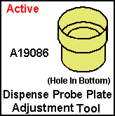
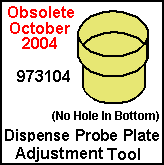

Tool - Dispense Probe Plate
Drawings


Description
The Dispense Probe Plate Adjustment Tool is a custom made metal tool for use on DxI instruments. Tool Part Number A19086 contains a clearance hole that allows the Substrate Probe to pass through the tool, thus eliminating the need to remove the Substrate Probe prior to performing this adjustment.
Note:
- Replace all 973104 tools with A19086.
- Two of these tools are required to properly perform the adjustment.
Part Number
Part Number A19086
Uses
The tool is used on DxI instruments to aid in the adjustment of the Dispense Probe Plate to the Wash Carousel.
Instructions for Using
Refer to AU: Adjusting Analytical Module procedure.
Calibration
Not Required - Replace if damaged.